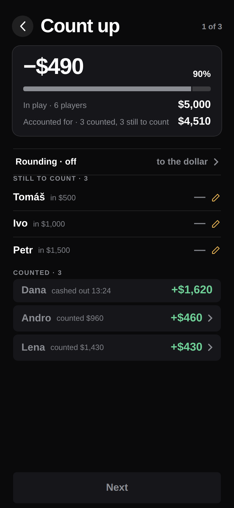
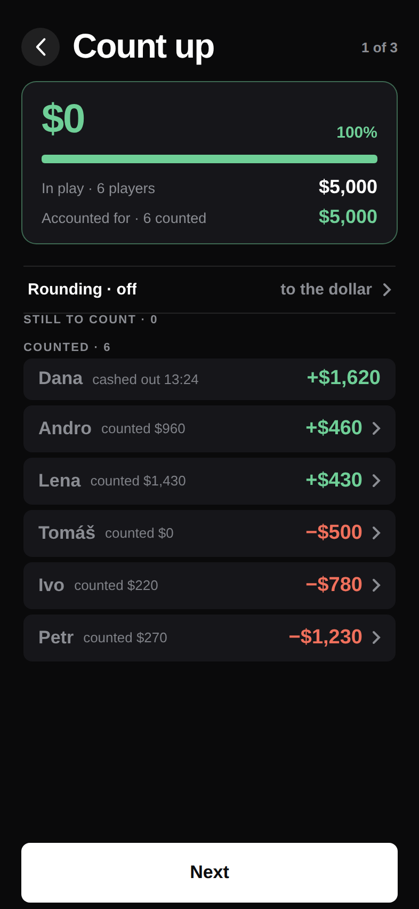

Nothing counted. Only Dana's cash-out is accounted for: −$2,880 · 42%.

Two stacks in. −$490 · 90%, and all three groups on screen at once.

Balanced: $0 · 100%, one green segment. Next went live with the last stack counted, not with the balancing.
2
Count up
/count-upPUSH · Chrome A1 of 3 · E2
What this screen owns
Every counted stack, and the rounding step for the whole night. The header block compares two sums: what went in, and what has been accounted for.
The way out
Next, dead until every stack is counted. Being off balance does not block the night — the gate is the count, not the agreement.
The header block · 6 September cut, option 1b
The signed gap is the headline — fluid from 38pt to a 24pt floor — with the percentage beside it and both sums in full underneath at 700 18. Nothing in the block can truncate at any digit count. The two-column card it replaced set both sums at display size in half a card each, and truncated any five-figure amount — which is the screen's one job (B43).
Three groups, and only one of them ranks
Still to count holds seat order; Counted ranks by net, descending, exactly like the results screens; Cashed out earlier is never re-counted. Counting a stack animates the row into its rank slot, with the rows below FLIPping down.
Two deliberate deviations · docs/screens.md
In play · 6 players, not the cut's Bought in — one word for that figure app-wide was the owner's instruction of 5 September. And a fourth, amber state for a count that is not finished but whose figures happen to meet; the cut's three states are driven by the subtraction alone, and green there would call a night level with a stack still uncounted.
Carries to E3 and E4
countedRaw and countedRounded for every player — the raw figure is never overwritten — plus the rounding step, which E4 and R1 display and neither owns.